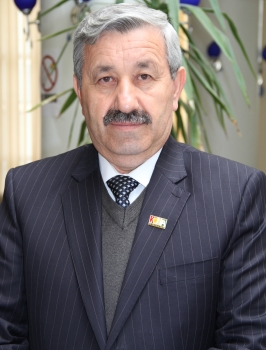

Dears colleagues,

Developing a vision for an academic institution, such as a university needs to be based on knowledge about the actual general conditions of the university, on the one hand, and its capacity to enhance the scientific level on the other in order to make impact on the social background from which it has emerged, and which demands it to play an effective role in changing the conditions for the better. Our vision stems from our desire that Koya University will be able to dream of a big process of scientific change, and to have a role in developing an advanced scientific programme at the level of Kurdistan Region, and to become a reliable source.
Here, I try, in the following points, to outline the steps, which I assume will be helpful in achieving this vision:
- I will work for the scientific, administrative and financial independence of the university and for making it responsible for making its own decisions by working closely with the staff members of the Ministry Council and the Koya University teaching staff.
- It is in my plan to work towards translating the name of the Ministry of Higher Education and Scientific Research into action where Koya University can take practical steps forward in terms of both high quality education and research.
- In my opinion, a successful university is one where all the staff members work together as one team each complementing the other. Therefore, nobody should be left out or excluded from participating in carrying out the important cultural mission carried by the university; this can only succeed when the active staff members get credit for their achievements in order to continue and the others are encouraged to follow their example and also by developing a spirit of free and healthy competition.
- I consider it a task and a responsibility to maintain the current ranking of Koya University as the fifth among the Iraqi Kurdistan Region's universities, and to make attempts to enhance it more not only at the level of the Kurdistan Region and Iraq but at the global level as well. To this end, I will try to improve and strengthen the academic relations with the outside world.
- My plan and programme will be to make Koya University have an effective and practical role in advancing Koya town and the areas around it and in developing ideas and conducting scientific research to tackle the different problems; and to enable the university to contribute to the strategic plans of the region according to scientific standards. In line with this, it is in my plan to pay attention to and develop scientific research centers provided with the necessary resources to meet the demands of the researchers so that their effective role in decision making will be apparent and they will be able to encompass and develop the scientific innovations of the researchers and to have a role in guiding and publishing the university teachers' researches in the advanced scientific journals of the world.
- In the near future, I will be working on two issues with the members of the University Council and the scientific staff, and these issues are: first, expanding the university through opening and renovating the scientific departments, including opening special departments where all the subjects in all academic years will be studied in English according to world standards in an attempt to practically link Koya University with all the nations of the world. The second issue will be planning and implementing a feasible programme for language learning, including Kurdish language for the foreign and non-Kurdish staff of Koya University and English for the university staff and cadres so that we will not be cut off from the science and knowledge of the world.
- I will try to put the principle of 'Long Live Learning' into its true shape so that the university can gradually plan programmes in this direction. This can be done through creating stage-by-stage parallel and paid education opportunities with taking the students' financial situation into consideration.
- Within the same vision, I request that, in addition to Bachelor's, Master's and Doctorate degrees, the university should award a Higher Diploma degree in some specializations in order to improve the capacity of those who want to join courses in some special expertise and obtain certificates; along with this, there has to be short-term and long-term courses for certain issues and topics.
- I also unify my efforts with those of the active staff members of the university, consultants and members of the Council of the Ministry of Higher Education and Scientific research to make attempts to gain legal, financial etc. authority for the university in order to be able to monitor and follow up the university graduates for some years after graduation in order to be confident about their capacity and level of progress and to make sure that they will find work after completing their university education.
- I will be working to build the teachers' capacity in a way that they will not only focus their identity on teaching, but to become well-known scientific researchers and experts through opening scientific capacity building courses for them and delegating them so that they will become familiarized with the experience of their peers in the advanced universities of the world.
- I will be working on activating the role of students within the university so that they will not only be passive receivers of science and knowledge and considered as unqualified certificate holders, but as productive individuals contributing to the scientific and educational process; moreover, the university should become a place for nurturing their capacities and personal interests, and for strengthening their personalities intellectually so that they will not become easy targets for unusual and unhealthy trends and so that their abilities will not be negatively exploited. We want them to be active members able to use their university education and learning to play a role in making and directing the public opinion in their communities.
- In all the above activities and programmes, quality assurance will remain an ongoing and steady process and we will work on removing the constraints and obstacles that hinder enhancing its continuity and efficiency.
Yours Sincerely;
Dr. Wali M. Hamad
President of Koya University (5/2/2015)
Please see my Academic Profile page for further information